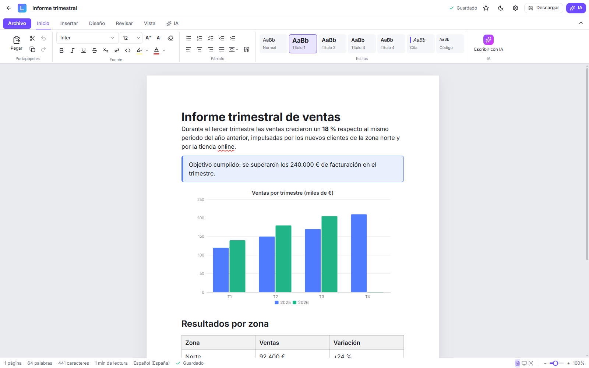
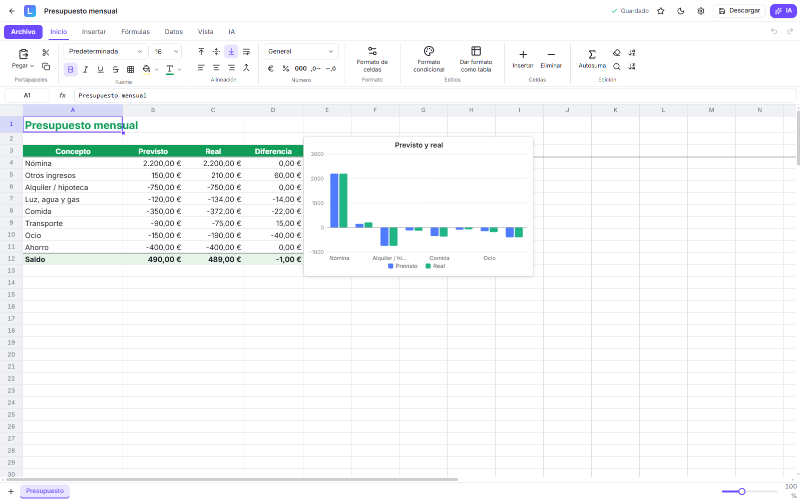
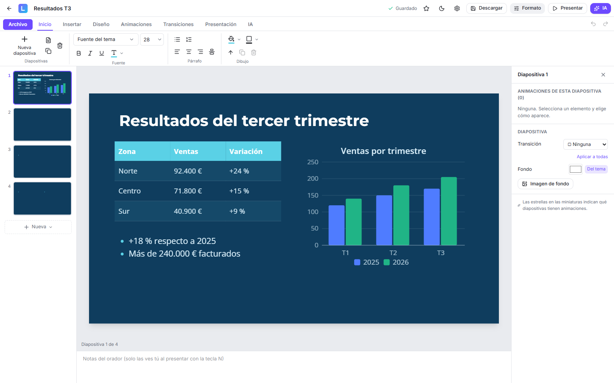
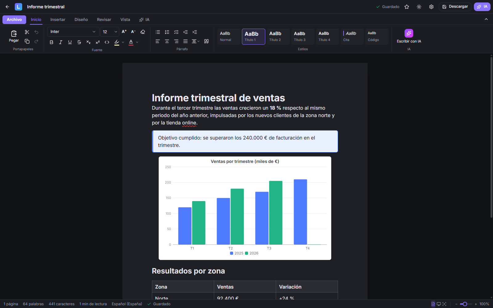
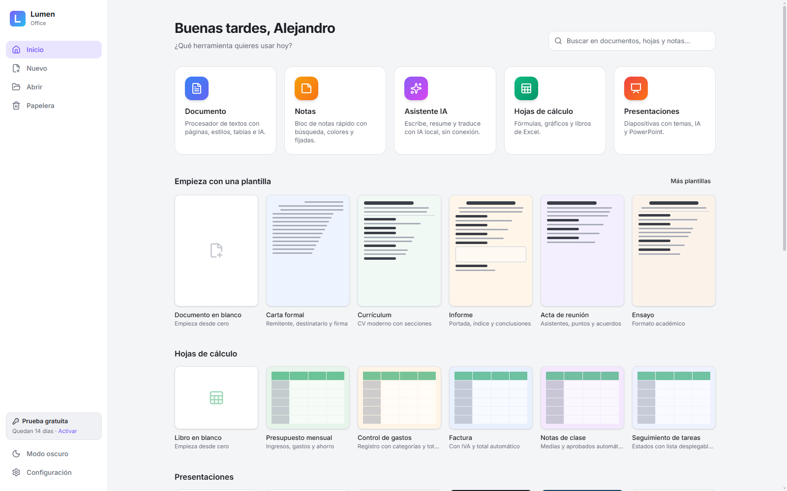

Tu oficina completa, en tu equipo
Documentos, hojas de cálculo y presentaciones compatibles con Word, Excel y PowerPoint. Sin suscripciones, sin nube obligatoria y con un asistente de IA privado.

Cuatro aplicaciones en una
Abre y guarda los archivos de siempre (.docx, .xlsx, .pptx) y compártelos con quien use Microsoft Office.
Documentos
Escribe con la comodidad de un procesador de textos de verdad.
- Comentarios y control de cambios
- Corrector ortográfico en español
- Gráficos, cuadros de texto, notas al pie y columnas
- Encabezados, pies e índices
Hojas de cálculo
Fórmulas, tablas y gráficos para tus cuentas y tus datos.
- Cientos de funciones de Excel
- Tablas dinámicas, filtros y formato condicional
- Gráficos y minigráficos que se ven en Excel
- Proteger hojas y celdas
Presentaciones
Diapositivas con estilo, listas para proyectar.
- Animaciones y transiciones
- Vista del moderador con segunda pantalla
- Tablas y gráficos en las diapositivas
- Guardar como vídeo MP4 o PDF
Notas y asistente
Apunta ideas al vuelo y pide ayuda a la IA sin enviar nada a internet.
- Notas rápidas con etiquetas
- IA local y privada en tu equipo
- Resumir, corregir, traducir y redactar
- Crea presentaciones a partir de un tema
Así se ve
Las mismas herramientas de siempre, con un diseño limpio y en modo claro u oscuro.




Pensada para trabajar a gusto
Todo lo necesario para el día a día, sin anuncios ni sorpresas.
Tus archivos, en tu equipo
Nada se sube a ningún servidor. Funciona sin conexión a internet.
Compatible con Office
Abre y guarda Word, Excel y PowerPoint conservando el formato.
PDF de un clic
Guarda cualquier documento, hoja o presentación como PDF con texto real.
Arranca en un momento
Ligera y rápida, incluso en equipos modestos.
Actualizaciones automáticas
Las mejoras llegan solas; la app te avisa y se actualiza en segundos.
Modo claro y oscuro
Elige el aspecto que prefieras; tus hojas y páginas siempre se ven bien.
Licencia de Lumen Office
Pruébala sin compromiso. Si te gusta, compra una licencia y sigue usándola.
- Las cuatro aplicaciones completas
- Actualizaciones incluidas
- Sin suscripción ni anuncios
Preguntas frecuentes
¿Puedo abrir mis archivos de Word, Excel y PowerPoint?
Sí. Lumen Office abre y guarda .docx, .xlsx y .pptx, además de PDF, Markdown, HTML, CSV y texto.
¿Necesito internet?
No. Todo funciona sin conexión. Solo se usa internet para buscar actualizaciones y, si quieres, para descargar el modelo de IA local la primera vez.
¿Qué pasa cuando termina la prueba?
La aplicación te pide una clave de licencia. Tus documentos siguen guardados en tu equipo.
¿La IA lee mis documentos en la nube?
No, si usas la IA local: se ejecuta en tu propio equipo. También puedes conectar tu propio servicio si lo prefieres.
¿En qué equipos funciona?
En Windows 10 y Windows 11 de 64 bits.
Windows dice «Windows protegió su PC» al instalar
Ocurre con las aplicaciones nuevas que aún no tienen firma digital. Pulsa «Más información» y después «Ejecutar de todas formas».